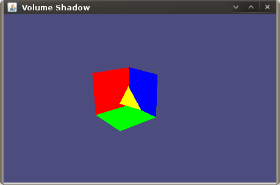

This part will now show you how to actually use the VolumeShadow lib.
Lets create a scene that acually uses the lib. At create a new class called World in a separate file. This class will contain our world (as the name implies) with a room, a light and a 3D object that casts shadow on the walls. The class needs to implement org.volumeshadow.ShadowScene and a reference to the GL context. The context can be passed in the constructor.
Now we will draw a room in the renderWorld method. Add the folowing code to the method:
This is not the prettiest room we have ever seen, as it has only 2 walls (and the ground), but it will be enough for our purpose. We are not done. We still need to add a light and an occluder. To give the VolumeShadow lib the capability to calculate a shadow volume, we need to provide it with the vertex data. So we will not only draw a occluder, but also draw it from a data structure that holds the triangle data. So lets change the contructor that it looks like the following and change the renderOccluder method.
Now back to the Main class. Apply the following changes so that our scene is drawn and have a first look at our scene.
This is just a basic scene. In part 3 of the tutorial we will add a light source and finaly draw the shadow.
{kind=link}